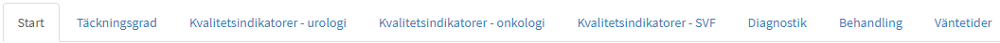
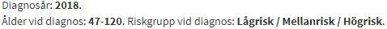
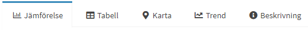
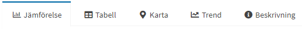
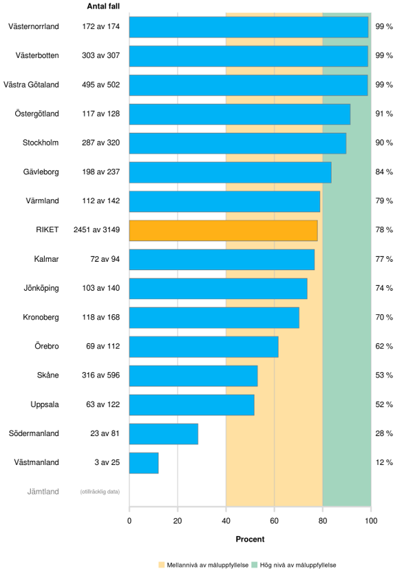
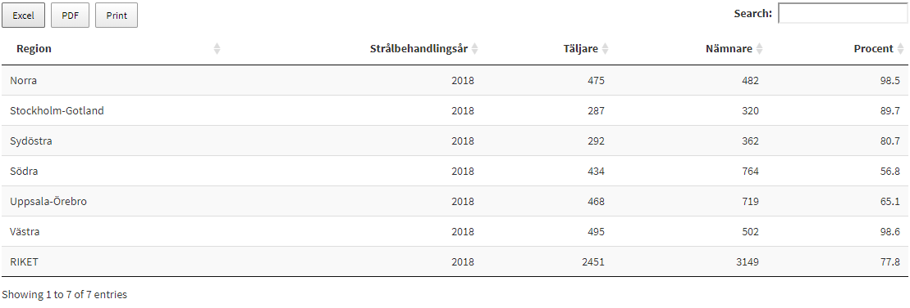
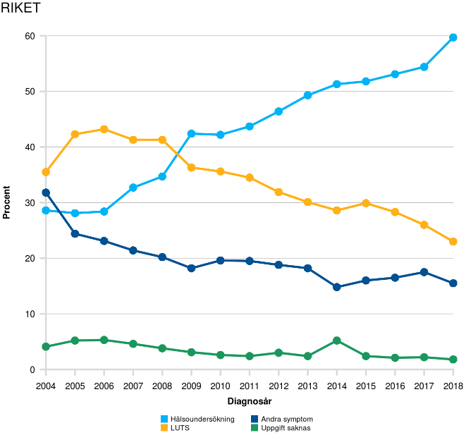
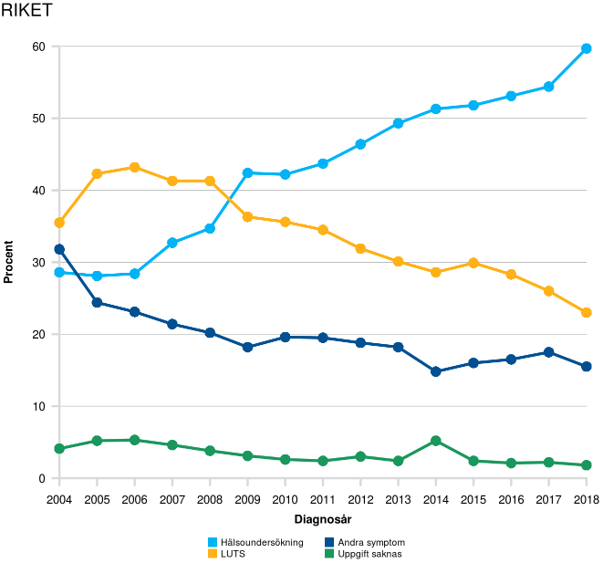
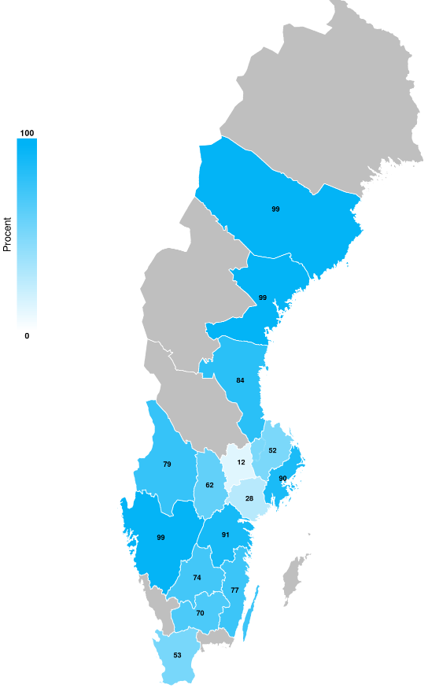
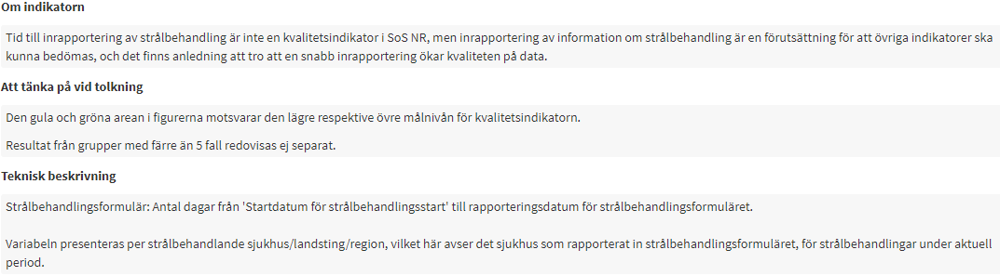

Tolkningsmanual för interaktiva Shinyrapporter
tolkningsmanual.RmdInstruktioner för användande av de interaktiva shinyrapporterna
Detta dokumentet är tänkt att vara till hjälp för användare av våra interaktiva årsrapporter (Shinyrapporter) som finns att hitta på https://www.cancercentrum.se/samverkan/vara-uppdrag/statistik/kvalitetsregisterstatistik/interaktiva-rapporter/. Figurerna som genereras i dessa rapporter kan sparas till din dator. Om du högerklickar på en figur så kan du välja “Spara bild som” och sedan spara figuren på din dator om du behöver använda den till t.ex. en presentation.
Val av indikator
När en interaktiv årsrapport öppnas finner du till att börja med en startsida. Där finns information från registret om rapporten. Du finner även en flikmeny högst upp på sidan under rubriken. Dessa flikar är kapitlen som finns i det aktuella registret.

När du klickar på en flik visas de indikatorer som finns i den filken i en undermeny. För att se en av dessa indikatorer klickar du på den och så ska figuren öppnas nedanför.

Urvalsdialog
När du har öppnat en indikator kommer denna att visas under menyn. Du kommer då att se en figur till höger och till vänster finns en urvalsruta där du kan göra urval för den öppnade indikatorn. Om du ändrar ett urval så kommer figuren/tabellen att laddas om och den nya figuren/tabellen baseras på dina urval. Figurerna/tabellerna uppdateras i realtid direkt du ändrar något urval.

Under titeln för indikatorn återfinns de aktuella urvalen som är gjorda. Om urval på en variabel inte är gjort utan samtliga möjliga val är valda kommer denna variabel ej att stå i listan.

Resultat
När du gjort dina urval finner du den uppdaterade indikatorn till höger. Det finns en meny där som kan se ut på lite olika sätt beroeden på vad för typ av indikator det är och vad registret valt att visa.
 

Under Jämförelse hittar du stapelfigurer. De är uppdelade på antingen Region, Sjukvårdsregion eller Sjukhus. Om registret valt att ha med fler än en jämförelsenivå kommer dessa att kunna väljas bland urvalen till vänster. Vad som visas beror på indikatorn. Det kan t.ex. vara antalet som fått en viss behandling eller fördelning av tumörstadium som så kallade stackade staplar. Om det är en ledtid kommer som standard mediantiden att visas men det kan även finnas möjlighet att välj att se andelen inom X dagar om registret valt att inkludera detta. Ett grönt skuggat område bakom staplarna betyder att registret har valt att ha en målnivå för indikatorn. Målet är uppnått om stapeln går över det det skuggade området. Ett gult skuggat område betyder att målnivån har 2 nivåer och det gula är ett lättare mål att uppnå.

Under Tabell, Tabell (Antal) och Tabell (Andel) hittar du tabeller över de data som presenteras i Jämförelse-fliken. Vilken/Vilka av de 3 tabell-flikarna som visas beror på vad det är för typ av indikator. Via kapparna i tabellerna kan antalssiffrona hämtas hem i lite olika format, Excel, PDF, eller i utskriftsformat.

Under Trend hittar du trender över per år över data enligt dina urval (du får dock alltid samtliga år här). Hur trenderna ser ut beror på vad det är för typ av didikator som du tittar på. För kategoriska indikatorer, som t.ex. fördelning av tumörstadium, är trenderna rikets siffror. Du kan då också välja att visa trendkurvan för ett specifikt sjukhus, län eller region. För indikatorer som t.ex. andel som fått en viss typ av behandling kommer trenderna vara över andelar för sjukvårdsregionerna samt riket. Här kan du även lägga till ett specifikt sjukhus trendkurva om registret presenterar data på sjukhusnivå.
 

Under Karta hittar du indikatorn på kartform, denna finns endast med om landsting är en av jämförelsenivåerna och figuren inte är en så kallad stackad stapel. Län som är gråa har ej tillräckligt med data för att visa resultatet.

Under Beskrivning hittar du information om indikatorn. Där kan du hitta 3 underrubriker, Om indikatorn, Att tänka på vid tolkning samt Teknisk beskrivning. Om du har någon fundering kring en indikator kan du titta här för att förhoppningsvis få svar på din fundering.
